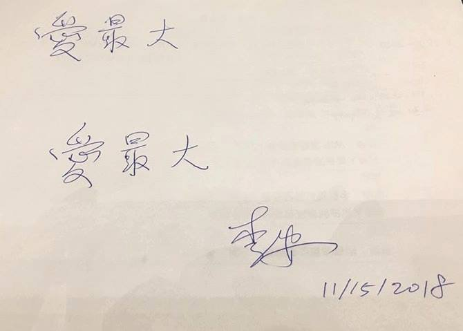

以前不理解，最近想了下，什么才能让人觉得活着是个挺有意思的事儿呢？游戏玩乐不能，责任其实也不能，能把一个人缚在人类大网中不逃离不厌弃，估计只有爱了吧。@唐实妙:爱最大我用的不是李安本义，但喜欢这句，也认同。 
#不明所以#之前问过姣姣理想，她说考上好大学，找个好工作时，我是有些失望的，有些妈妈反馈说希望自己孩子也这么想，自己家孩子就是太爱玩了，有些羡慕姣姣这么懂事。而我现在要求姣姣考上好大学，所以会想为什么自己这么矛盾。大概，我以为年轻人的想法，应该跟我这个中年人不同，如果她有跟大众很不一样的喜好，并且为之狂热，我会欣喜。但既然没有自己经过思考后的选择，并且具备自己承担选择后果的能力，那么走大部分人都会走的路，其实是最优选项。